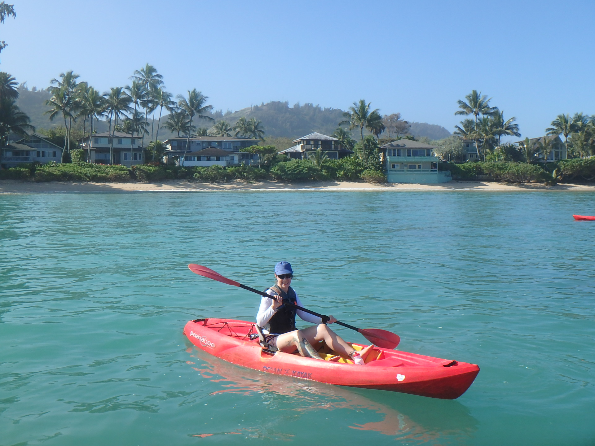

Marlo Bennett
About Me
Hi there! Welcome to my pages. This site is designed to show my newly developed (and developing) web programming skills.
I've spent most of my career in publishing, working on everything from community newspapers and college textbooks to financial treatises and technical manuals. The many changes I've seen in the publishing industry have inspired me to turn my energy toward learning more advanced - and fun! - technologies.
In my spare time I enjoy standup paddleboarding, hiking, and hula hooping. I share my home with a very sweet 12-year-old German shepherd mix named Riley, and I love all dogs (and pretty much any animal who will tolerate my enthusiasm).
I'm excited to see where this course will take us, and what this site will become. Stay tuned!
Connect with Me